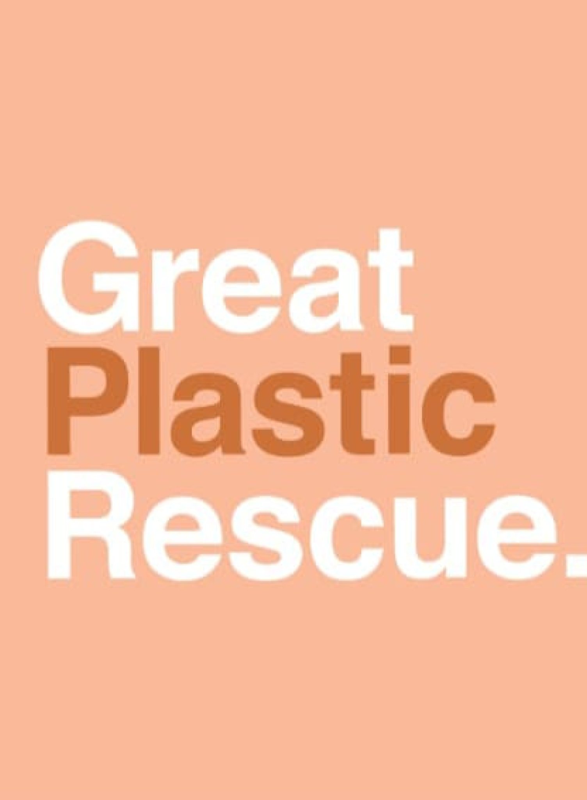

The Resilience of Recycled PlasticIn an age where environmental concerns
loom large, the redemption of plastic waste stands as a beacon of hope.
With innovative recycling processes and heightened awareness, plastic is
being rescued from its status as a pollutant to becoming a
valuable resource